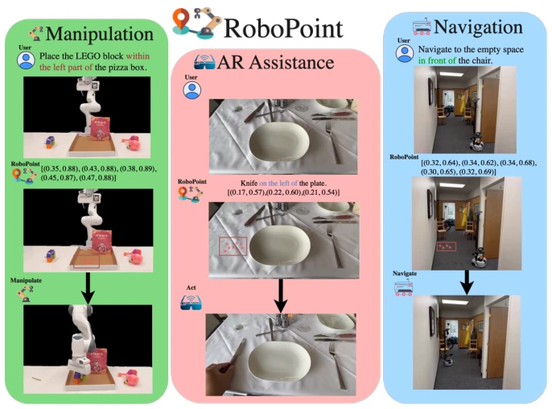
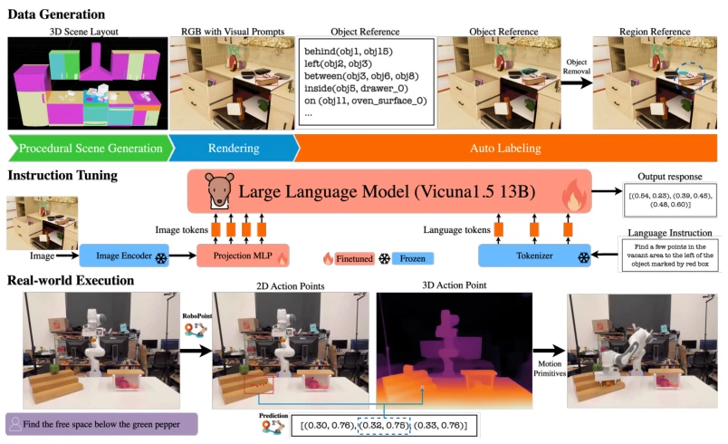
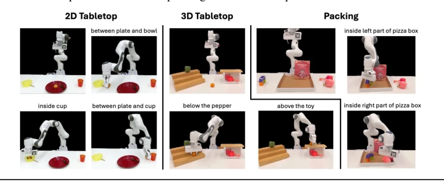
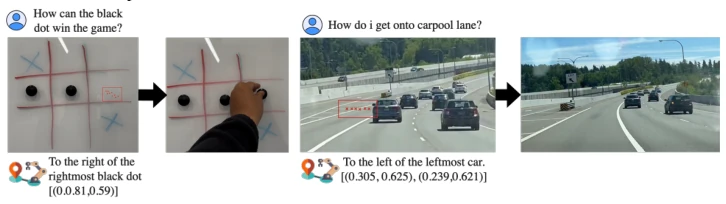

This paper attempts to use VLM to address the pain point of robots 'not understanding human language', particularly the ambiguity of spatial instructions. The authors did not take the ordinary path, avoiding reliance on expensive human demonstration data, but instead developed an automated synthetic data pipeline to enable the model to learn 'point where it hits'. Compared to GPT-4o and PIVOT, RoboPoint indeed outperforms in spatial localization accuracy, even handling unseen spatial relationships. However, do not celebrate too early; essentially, it remains a 'pointing model'. After outputting 2D coordinates, it still relies on depth maps to convert to 3D, remaining distant from true end-to-end control. Furthermore, it does not output confidence scores, raising the question of whether the robot can trust it. Overall, it is a good middleware, but still falls a bit short of a 'general-purpose robot'.
The core of embodied intelligence lies in precise execution, but existing VLMs often stop at semantic understanding, making it difficult to convert instructions like 'put the cup next to the plate' into precise actions [11]. Although visual prompting methods like PIVOT attempt to solve this, they rely on external detectors and are inefficient [17]. SpatialVLM can predict spatial relationships, but does not refine to specific operation points [22]. Robots need to share environmental information through 'pointing' like humans [3], while existing methods lack this fine-grained spatial reasoning capability, leading to low task success rates in cluttered environments. Therefore, there is an urgent need for a model that can directly output precise spatial affordance points, freeing from reliance on predefined action primitives or large amounts of real demonstration data.

Figure 1: ROBOPOINT is a Vision-Language Model that predicts affordance points based on language instructions. It is able to generate precise actions (red crosses in the image) which satisfy spatial relations in the instruction. ROBOPOINT is a generic VLM that can be applied to many domains such as manipulation, augmented reality and navigation.
RoboPoint is instruction-tuned based on Vicuna-v1.5-13B [43], the core lies in defining the action space as keypoint coordinates in the image, rather than fuzzy bounding boxes. The overall process is divided into two parts: data construction and model training. In terms of data, the authors designed an automated synthetic pipeline, constructing 660K instruction-point data pairs by procedurally generating 3D scenes (random layout, objects, viewpoints), innovatively generating 'free space' affordance labels, solving the localization problem in areas without visual cues, which existing methods find difficult to achieve. During training, a mixed data strategy is adopted, combining real VQA [45] and LVIS [46] data to prevent catastrophic forgetting, ensuring the model retains common sense. In terms of model architecture, the visual encoder is frozen, only updating the MLP projection layer and language Transformer, outputting normalized 2D point coordinates by predicting response tokens. This point representation is more precise than bounding boxes and requires no predefined action primitives. During deployment, 2D points combined with depth maps are projected as 3D targets for use by the motion planner, achieving a closed loop from language to action.

Figure 2: Overview of ROBOPOINT pipeline. An RGB image is rendered from a procedurally generated 3D scene. We compute spatial relations from the camera’s perspective and generate affordances by sampling points within object masks and object-surface intersections. These instruction-point pairs fine-tune the language model. During deployment, ROBOPOINT predicts 2D action points from an image and instruction, which are projected into 3D using a depth map. The robot then navigates to these 3D targets with a motion planner.
Experiments were conducted on RoboRefIt and a self-built benchmark WHERE2PLACE, evaluating object references and free space references. Baselines include GPT-4o [11], LLaVA-NeXT [21], and PIVOT [17]. Metrics are the percentage of predicted points falling within the ground truth mask and downstream task success rate. Results show RoboPoint significantly outperforms baselines in spatial reasoning, accuracy improved by 21.8%, downstream task success rate improved by 30.5%. Ablation studies show that free space references in synthetic data are crucial for generalization, and mixing real VQA data can maintain common sense capabilities. Additionally, the model also demonstrated cross-view consistency in navigation and AR-assisted scenarios, proving its generalizability.

Figure 5: Real-world manipulation evaluation. We created 7 language-conditioned manipulation tasks to measure ROBOPOINT’s capability on real robot. ROBOPOINT outperforms the best baseline by 39.5% on average success rate, which depends critically on the alignment between the point predictions and the language.
其他图片Other Figures

Figure 7: Application to Augmented Reality. Given a user query, ROBOPOINT first generates natural lan- guage response using common sense and then provide visual guidance using spatial affordance prediction, which the user can execute with greater ease than language guidance.